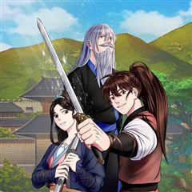

로그인 무림 같은 웹툰 추천

로그인 무림 · 장철벽 / 제로빅
로그인 무림 재밌게 봤다면 이 웹툰들도 좋아할 거예요. 같은 장르이면서 게임판타지, 서스펜스, 개그 같은 요소가 겹치는 작품을, 겹치는 요소가 많은 순서로 20개 골랐어요.
2026-10-02 기준 · 네이버웹툰·카카오웹툰·레진코믹스 · 성인 작품 제외
내 취향으로 직접 골라 추천받기 →-
1
 카카오웹툰
카카오웹툰무림 속 공무원으로 살아가는 법
무협지 배경의 추리 게임 <대환국의 명포쾌>의 고인물 연우혁 어느 날 전조도 없이 게임 속의 포쾌로 빙의하게 된다. 다행히 외우고 있던 게임 내 사건이 그대로 나온다는 것을 깨닫고 사건을 해결하면서 게임 속 포쾌로 적응을 시작하는데 기쁨도 잠시 연우…
서스펜스개그액션무협카카오웹툰에서 보기 → -
2
 카카오웹툰
카카오웹툰레벨업 못하는 플레이어
18세의 나이에 '플레이어'로 각성한 김기규. '탑'을 오르고 '게이트'를 닫으며 인생이 탄탄대로일 줄 알았는데... 튜토리얼을 아무리 클리어해도 레벨1. 1일 1고블린을 해도 레벨1. 5년이 지나도 레벨1. "누가 알았겠냐고, 이런 플레이어가 있는…
게임판타지서스펜스판타지액션카카오웹툰에서 보기 → · 레벨업 못하는 플레이어 같은 웹툰 → -
3
 카카오웹툰
카카오웹툰엔딩메이커
게임 영웅전기2의 고이다 못해 썩은물인 두 사람. 만년 1등 '아웃복서009'와 만년 2등인 '노란폭풍'. 어느 날, 두 사람은 게임 속에서 눈을 뜨는데……. “야… 너두?” “야… 나두!” 영웅전기2의 결말은 세계의 멸망. 하지만 혼자가 아닌 둘이…
게임판타지개그판타지액션카카오웹툰에서 보기 → -
4
 네이버웹툰
네이버웹툰정권으로 세계최강
아버지의 복수를 위해 10년간 폐관 수련에 들어간 진권. 마침내 하산한 그를 기다리고 있던 건, 원수보다도 낯선 세상이었다. 무림은 사라지고, 세상은 스킬이 지배하는 판타지 시대로 변해 있었다. 주먹과 도복밖에 남지 않은 진권. 하지만 시대가 바뀌었…
개그판타지액션네이버웹툰에서 보기 → -
5
 네이버웹툰
네이버웹툰억만무림
6600만 년 전, 무공을 쓰는 공룡들이 살아가는 무림. 천마의 난 이후 혼란이 이어지는 가운데, 스승을 잃은 트리케라톱스 소년 벽뢰아는 숨겨진 무공과 천마의 진실을 찾기 위해 모험에 나선다. 거대한 음모와 대재앙의 비밀에 맞서며, 그는 공룡 무림의…
개그판타지액션네이버웹툰에서 보기 → -
6
 네이버웹툰
네이버웹툰천마육성
마교의 태왕각주 ‘사마귀’의 명령으로 화산파 출몰 지역으로 파견나간 비객조. ‘설휘’는 화산파의 절대고수 ‘구종명’에게 죽임을 당할 위기에 처한다. 그때 눈 앞에 상태창이 나타나고 정찰 임무를 받기 직전으로 회귀하게 된다. 설휘는 자신이 전생에서 죽…
게임판타지판타지액션네이버웹툰에서 보기 → · 천마육성 같은 웹툰 → -
7
 카카오웹툰
카카오웹툰무림에 떨어진 현대인
생존을 위해 아르바이트를 하는 만년 공시생인 나. 한밤중 배달을 하다 과속하던 차에 쓰러졌다. 뺑소니로 요절했던 죽음의 기억이 강렬한데, ‘……내가 조휘?’ 어느 순간 다 쓰러져 가는 조가철방의 차남이 되었다. 날아가는 새를 떨어뜨릴 권세도, 의지를…
게임판타지판타지액션카카오웹툰에서 보기 → -
8
 카카오웹툰
카카오웹툰만렙부터 레벨업
외공만렙, 내공만렙 강호무림의 명실상부한 천하제일인 차신현. 무공의 끝에 도달하고 지구로 귀환했는데, 어째 뭔가 많이 달라져 있다? 던전에서 몬스터가 튀어나오고 헌터가 상태창으로 레벨을 올리는 세상. '1레벨부터 시작이라고? 아무렴 어떠냐. 이미 내…
게임판타지판타지액션카카오웹툰에서 보기 → -
9
 카카오웹툰
카카오웹툰천재 궁수의 스트리밍
선수권 대회 최연소 우승자. 그러나 비운의 사고로 몰락한 천재 양궁 선수 유상현! 먹고살기 위해 게임 스트리머, 아몬드가 되는데…. [활을 선택하셨습니다.] 피융! 푸욱! "…보스 원래 한 방이에요?" [엄마! 나는 커서 아몬드가 될래요!] [이게…
서스펜스판타지무협카카오웹툰에서 보기 → · 천재 궁수의 스트리밍 같은 웹툰 → -
10

-
11
 카카오웹툰
카카오웹툰패왕의 별
강렬하고 붉은 패왕의 별이 떴다! 그 별의 정기를 받고 태어난 아이는 자라나 패왕이 되고 천하(天下)를 지배하게 된다는 전설의 별! 미천한 자리에서 가장 높은 곳에 오르려는 자, 천류영! “내 그릇의 크기는... 나도 몰라.” “아직까지 그릇을 채울…
서스펜스액션무협카카오웹툰에서 보기 → -
12
 네이버웹툰
네이버웹툰공포 쯔꾸르 생존기
전설의 공포게임 [비현실]을 실행한 순간 게임 속에 갇힌 이현. 한밤중의 학교에서 눈을 뜬 그는 의문의 여고생 다연과 만난다. 이곳에서 살아남는 방법은 단 하나, 섬뜩한 퍼즐을 풀고 숨겨진 규칙을 찾아낼 것. 과연 두 사람은 죽음의 게임을 끝내고 현…
게임판타지서스펜스판타지액션네이버웹툰에서 보기 → -
13

카카오웹툰천하제일 표사
어느 날 천하제일인이 사라졌다. 그리고 산골 소년 소운 앞에 나타난 노인. 치매에 걸려 자신을 기억 못하는데... 소운은 노인을 어릴 때 사라진 스승으로 알고 정성스럽게 모시며 무공을 배운다. 그런데 육 년 후, 정신을 차리고 사라진 스승. 소운은…
서스펜스액션무협카카오웹툰에서 보기 → -
14
 카카오웹툰
카카오웹툰질풍패도
반년 만에 끝나 버린 북마교의 난(亂). 승리를 거머쥔 강호 무림, 다가올 난세를 평정하기 위해 숙적의 혼을 일깨우다. 천하 모든 마도(魔道)를 소거시키기 위한 한 남자의 무림행!
서스펜스액션무협카카오웹툰에서 보기 → -
15
 카카오웹툰
카카오웹툰검공가에 환생한 검제
오직 무인으로서 강해지는 것만을 추구하는, 옛 시대에서나 찾아볼 법한 구도자였던 존재, 검제. 당대의 천하제일인이었던 천마와 삶의 마지막을 장식할 비무 후, 대륙 최강의 검가 카르데나스 가문의 핏줄로 깨어나다!
서스펜스판타지무협카카오웹툰에서 보기 → -
16
 네이버웹툰
네이버웹툰화산귀환
대 화산파 13대 제자.천하삼대검수 매화검존 청명. 천하를 혼란에 빠뜨린 고금제일마 천마의 목을 치고 십만대산의 정상에서 영면. 백 년의 시간을 뛰어넘어 아이의 몸으로 다시 살아나다. ......뭐? 화산이 망해? 이게 뭔 개소리야!?
개그판타지무협네이버웹툰에서 보기 → · 화산귀환 같은 웹툰 → -
17
 네이버웹툰
네이버웹툰원주민 공포만화
끝날 때까지 끝난 것이 아니다! 마지막까지 방심할 수 없는 다양한 에피소드. 당신의 상상을 뛰어넘는 본격 반전 공포 스릴러가 온다!
서스펜스개그판타지스릴러·공포네이버웹툰에서 보기 → -
18
 카카오웹툰
카카오웹툰비뢰도
홀로 길러주신 아버지를 잃고 10세에 혈혈단신이 된 비류연. 조각가였던 아버지에게 배운 기술로 부모님의 조각상을 만들어 두 분 묘 앞에 세워뒀더니, 지나가던 노인이 그걸 보고는 천하제일 무공을 가르쳐주겠다고 한다. 수상쩍지만 달리 갈 곳도 없고, 그…
개그액션무협카카오웹툰에서 보기 → · 비뢰도 같은 웹툰 → -
19
 카카오웹툰
카카오웹툰집 잘못 찾아오셨어요, 악역님
아무래도 나는 이웃집의 사연 많은 엑스트라인 모양이다. 원작의 전개대로라면 이제 여주인공이 치명상을 입고 쓰러진 악역을 구해주고 그 대가로 미남 악역의 광적인 집착을 받아야 했다. 그런데 어째서인지 악역 서브남이 내 집 앞에 기절해 있는 것이 아닌가…
서스펜스개그판타지스릴러·공포카카오웹툰에서 보기 → -
20
 카카오웹툰
카카오웹툰신마의선
정파의 신의, 사파의 마의. 전설적인 두 의원이 혼인을 했다? 아빠는 신의, 엄마는 마의. 부모님의 의술을 물려받은 단악선 앞에 나타난 절대 고수. 그 운명적인 만남은 어린 단악선을 강호로 이끄는데...
개그액션무협카카오웹툰에서 보기 →